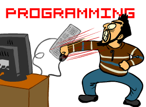

Jr. a los 30+

Agustin Mulet
Frontend Developer

PRECAUCIÓN
Esta presentación contiene (demasiados) GIF animados


Genial, conseguí trabajo... ¿Y ahora?


¿Soy un impostor?
Síndrome del impostor
¿Qué es?
Es esa sensación molesta que te hace pensar que "no pertenecés", que no te merecés tus logros y que en cualquier momento los demás se van a dar cuenta de que sos un fiasco.¿Qué tipos de síndrome hay?
Según dice la Dra. Valerie Young en su libro, se puede clasificar en 5 subgrupos:
- La / El Perfeccionista
- La Supermujer / El Superhombre
- La / El Genio Natural
- La / El Individualista Cabeza Dura
- La Experta / El Experto
La / El Perfeccionista
Preguntas a hacerte para ver si te sentís identificado/a:
- ¿Alguna vez te llamaron controlador/a excesivo/a?
- ¿Te cuesta delegar trabajos? Cuando lo hacés, ¿te sentís frustrado/a y/o decepcionado/a con los resultados?
- Cuando no llegás a tu objetivo, ¿pensás que no estás hecho/a para tu trabajo y te quedás pensando en eso durante días?
- ¿Sentís que tu trabajo tiene que estar 100% perfecto el 100% de las veces?
Hay que aprender de los errores tomándolos como una parte natural del proceso. Empezá el proyecto que venís planeando hace mucho. Nunca va a haber un "momento ideal" y tu trabajo no va a ser nunca 100% perfecto. Cuanto más rápido aceptes esto, mejor vas a sentirte.
La Supermujer / El Superhombre
Preguntas a hacerte para ver si te sentís identificado/a:
- ¿Te quedás más tiempo en la oficina que el resto de tus compañeros, aun cuando ya completaste lo que tenías que hacer en el día?
- ¿Te estresás y sentís que estás perdiendo el tiempo cuando no estás trabajando?
- ¿Renunciaste a pasatiempos por tener que trabajar?
- ¿Sentís que no te ganaste el puesto y te sentís presionado/a a trabajar más que el resto para probar que valés?
Aprendé a tomar las críticas constructivas con seriedad, y no de manera personal. A medida que vayas dejando de lado la necesidad de validación y vayas teniendo más confianza en vos mismo/a, en que sos competente y habilidoso/a, vas a poder bajar un cambio y entender cuánta cantidad de trabajo es saludable.
La / El Genio Natural
Preguntas a hacerte para ver si te sentís identificado/a:
- ¿Estás acostumbrado/a a sobresalir sin demasiado esfuerzo?
- ¿Recordás cuántos dieces te sacaste en todo lo que hiciste?
- ¿De chico/a te decían que eras "el/la inteligente" de tu familia o del grupo?
- ¿Te molesta tener la idea de tener un mentor, porque sentís que podés hacer las cosas solo/a?
- ¿Cuando tenés un contratiempo, se quiebra tu confianza al no hacer las cosas bien y te da un poco de vergüenza?
- ¿Evitás desafíos por no querer intentar algo en lo que no sos bueno/a?
Para superarlo, intentá verte a vos mismo/a como un diamante en bruto. Para lograr cosas, llevá una vida de aprendizaje y desarrollo de habilidades, incluso en las que te sientas más seguro/a. En vez de maltratarte por no llegar a una meta imposiblemente alta, identificá qué cosas cambiar de tu actitud que te ayuden a mejorar.
La / El Individualista Cabeza Dura
Preguntas a hacerte para ver si te sentís identificado/a:
- ¿Sentís constantemente que para que algo salga bien, lo tenés que hacer vos solo/a?
- "No necesito la ayuda de nadie". ¿Te suena conocido?
- ¿Enmarcás tus necesidades en términos de requerimientos del proyecto en vez de tus necesidades como persona? ¿Do you frame requests in terms of the requirements of the project, rather than your needs as a person?
No tiene que darte vergüenza pedir ayuda cuando lo necesitás. Si no sabés cómo hacer algo, preguntale a un/a compañero/a. Si no lográs descifrar cómo resolver un problema, pedile ayuda a tu jefe. Hacer de mentor/a y ayudar a tus colegas puede ser una muy buena manera de descubrir tu inner expert. Cuando compartís lo que sabés no sólo beneficia al resto, sino que también ayuda a sanar tus sentimientos de impostor.
La Experta / El Experto
Preguntas a hacerte para ver si te sentís identificado/a:
- ¿Evitás mandar currículums a empresas a menos que cumplas con absolutamente todos los requisitos que se piden?
- ¿Te la pasás haciendo cursos porque sentís que necesitás mejorar tus habilidades para tener éxito?
- Por más que hace un rato que trabajás en lo mismo, ¿sentís que no sabés “lo suficiente”?
- ¿Te encogés de hombros cuando alguien te dice que sos un/a experto/a?
Para evitar esto empezá a practicar el aprendizaje "just-in-time", que sería aprender un skill cuando realmente necesites utilizarlo, por ejemplo al cambiar de puesto o proyecto, en vez de acumular conocimiento para (falsamente) sentirte bien con vos mismo.
Basta de cháchara, ¡hagamos un test!
impostortest.netlify.com
Resultados:
- Puntaje menor o igual a 40: Tenés pocas características de impostor.
- Puntaje entre 41 y 60: Tenés experiencias moderadas del fenómeno del impostor.
- Puntaje entre 61 y 80: Sentís frecuentemente que sos un impostor.
- Puntaje mayor a 80: Tenés experiencias muy seguido del fenómeno del impostor.
Cuanto más alto el puntaje, más interfiere el fenómeno del impostor en la vida de una persona.
Resumiendo:
- Hablen!!!
- Sean humildes
- Aprendan a aceptar críticas
- Aprendan a pedir ayuda
- Insistan
- Son mejores de lo que creen